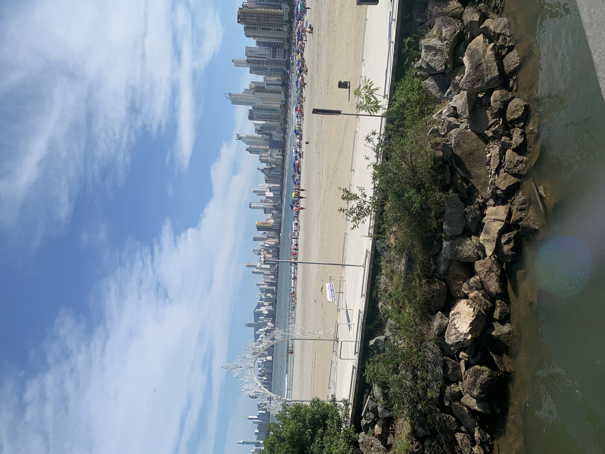
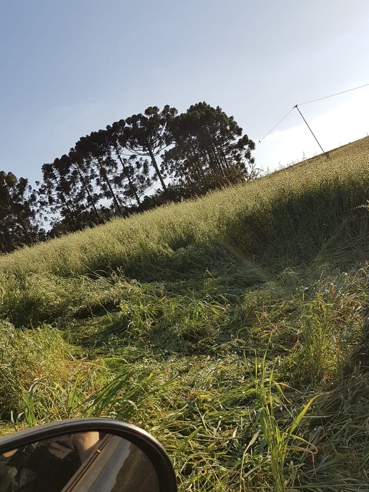

Produção Agrícola: Base da Economia Rural
A produção agrícola é a espinha dorsal das comunidades rurais, abastecendo mercados locais e nacionais com alimentos frescos e de qualidade.
A modernização das técnicas agrícolas, o uso de insumos adequados e a adoção de tecnologias digitais têm potencializado a produtividade e a sustentabilidade.
Industrialização e Agregação de Valor
As agroindústrias agregam valor aos produtos agrícolas, aumentando a renda dos produtores e promovendo o desenvolvimento local.
Exemplos incluem beneficiamento de frutas, produção de derivados lácteos, moagem de cereais e fabricação de alimentos processados.
A integração de tecnologias como sensores IoT, máquinas automatizadas e softwares de gestão melhora a eficiência operacional e reduz desperdícios.
A inovação tecnológica é essencial para tornar a produção mais competitiva e sustentável no longo prazo.
O respeito ao meio ambiente e às comunidades locais é um diferencial competitivo.
A adoção de práticas sustentáveis, como o uso responsável de recursos e a valorização do trabalho rural, fortalece a imagem dos produtores e atrai consumidores conscientes.
Desafios e Oportunidades
Apesar dos avanços, a produção rural enfrenta desafios como o acesso a crédito, infraestrutura e capacitação técnica.
As oportunidades estão na inovação, na diversificação da produção e na abertura de novos mercados.
O Agrinho 2025 busca incentivar essas transformações por meio de eventos, palestras e capacitações.